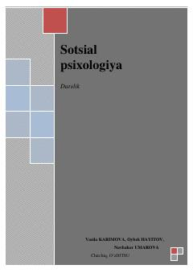

SPIjtimoiy psixologiya va etnopsixologiya fanining asoslari bayon etilgan oliy ta'lim darsligi.
Mazkur darslik ijtimoiy psixologiya va etnopsixologiya fanining nazariy asoslari, metodlari hamda amaliy yo'nalishlarini qamrab olgan. Unda muloqot psixologiyasi, kichik va katta guruhlar, shaxs ijtimoiylashuvi hamda milliy xarakter kabi dolzarb masalalar yoritilgan. Kitob oliy o'quv yurtlari talabalari, tadqiqotchilar va sohaga qiziquvchilarga mo'ljallangan.